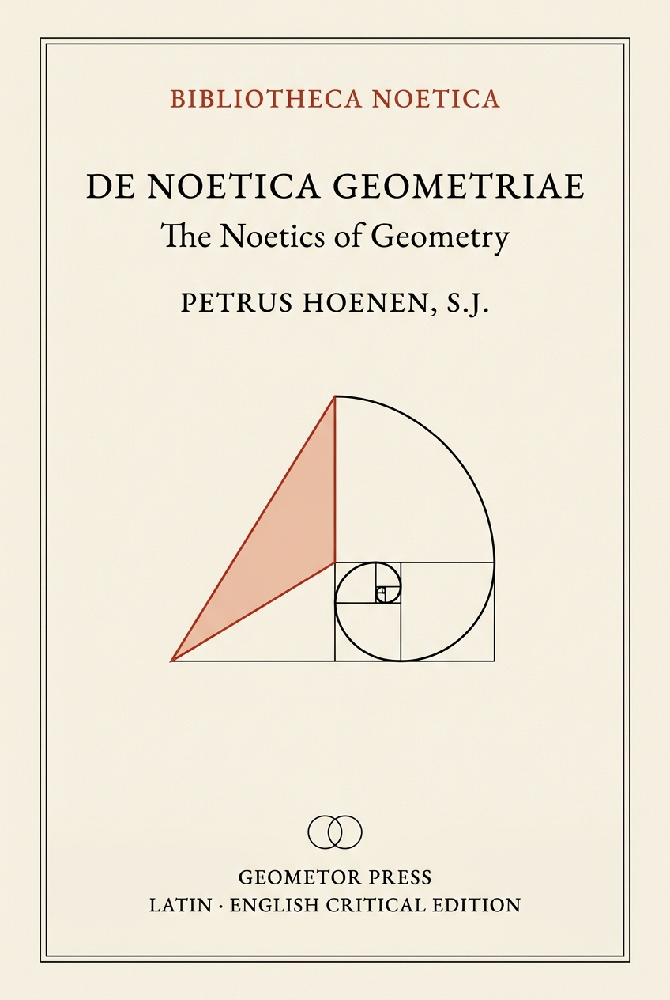
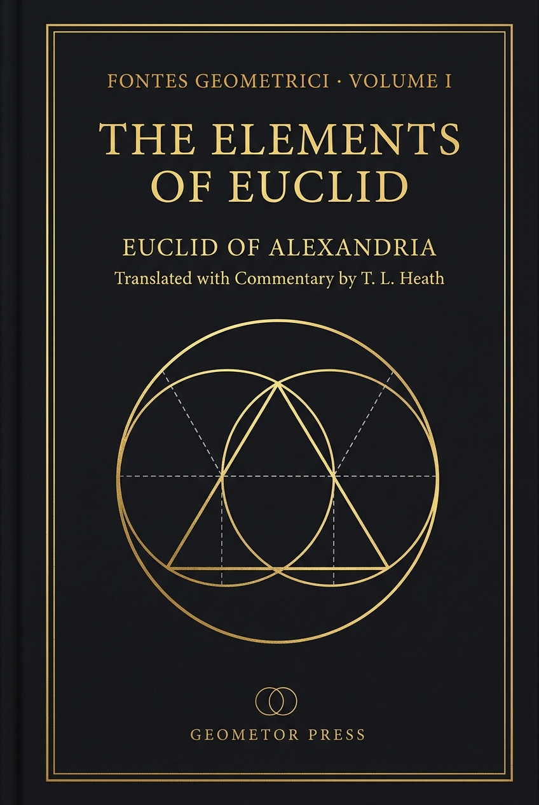
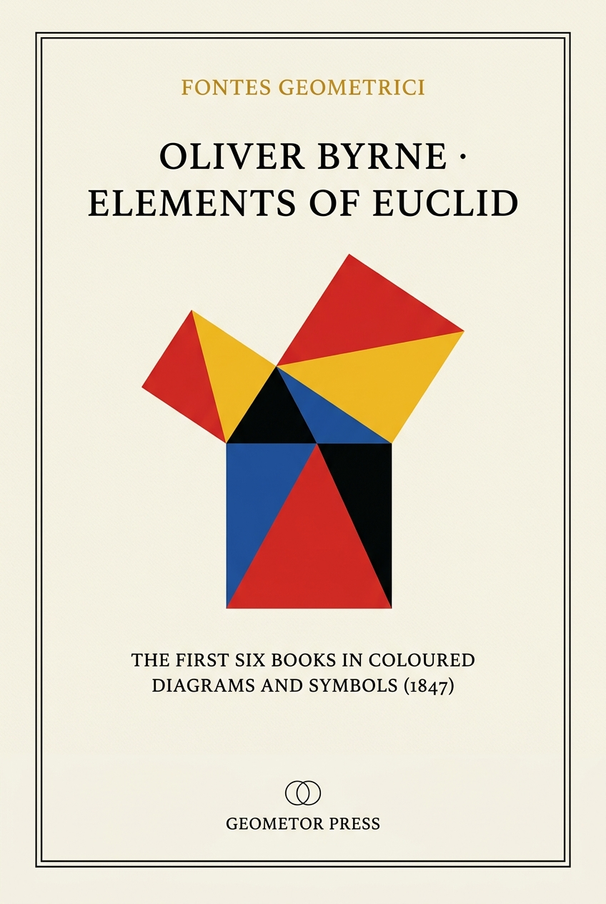
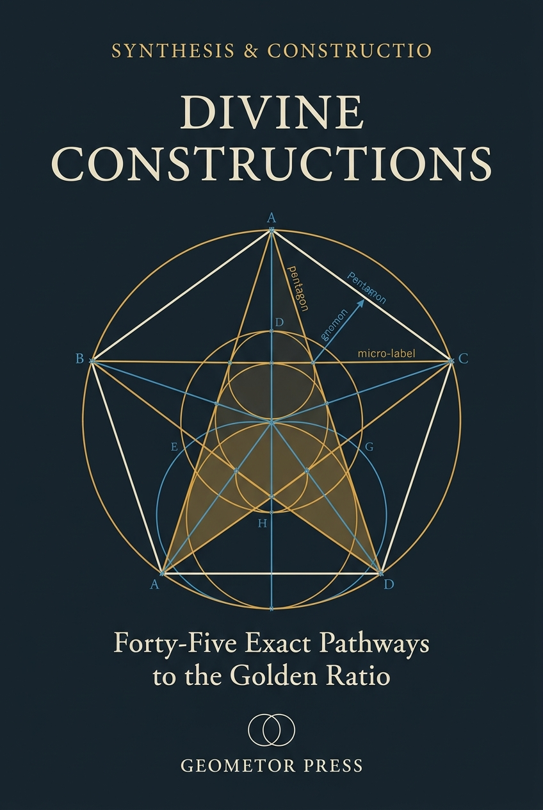
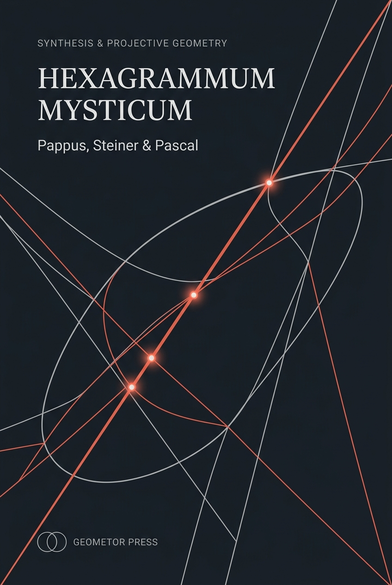
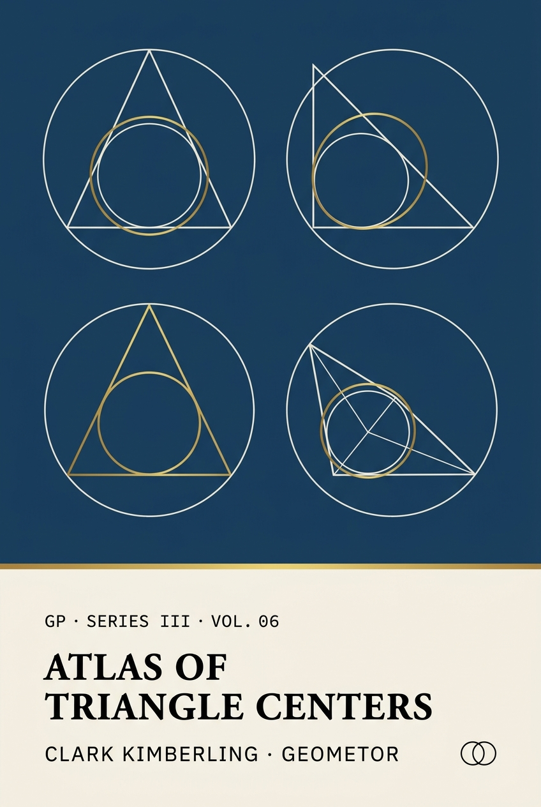
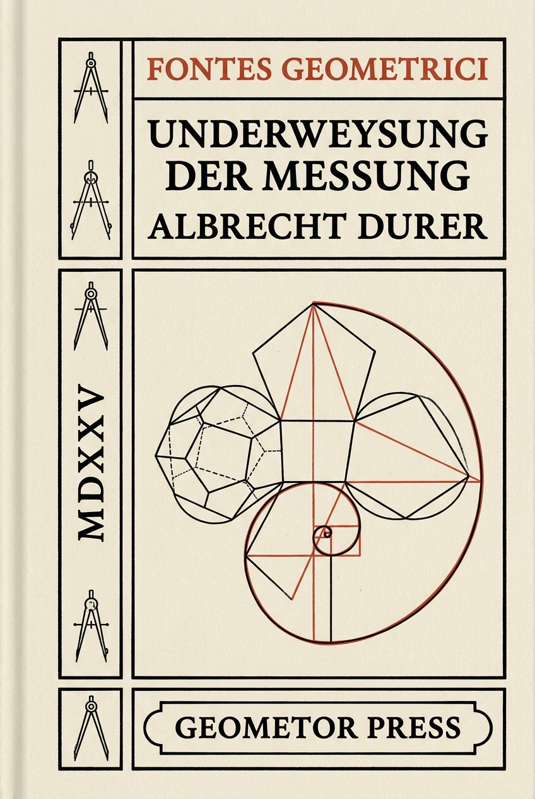
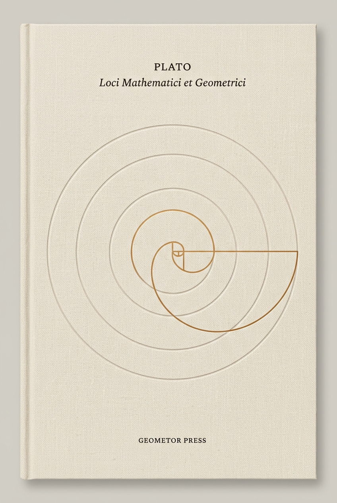
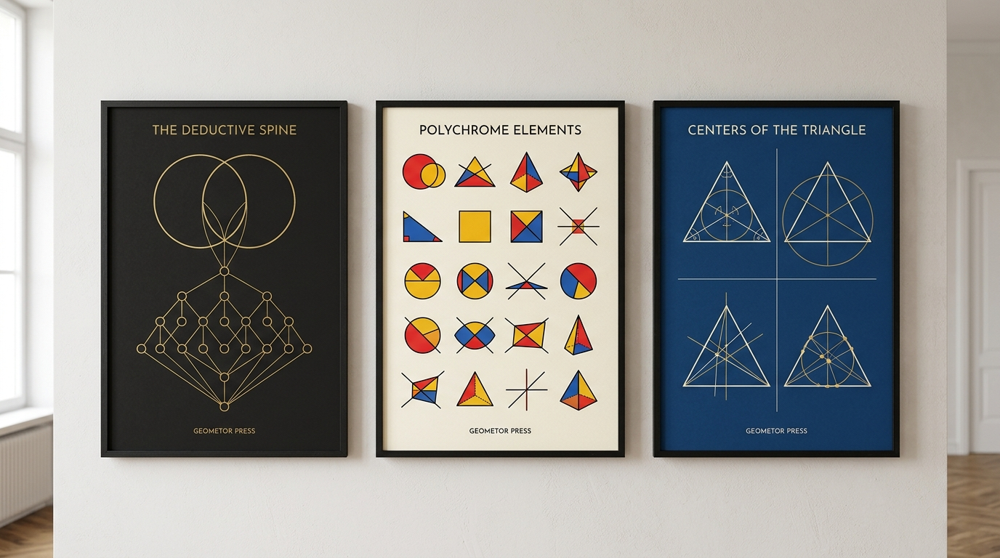
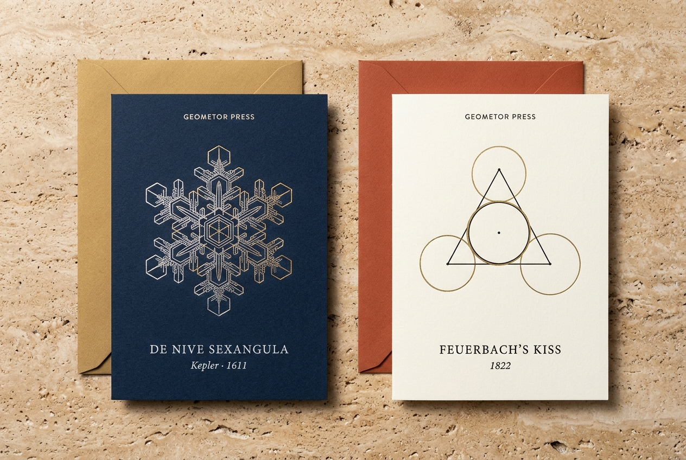

Visual Concept Lookbook¶
All 12 visual concept studies exploring GEOMETOR Press bindings, spine systems, alternate cover philosophies, collector card decks, greeting cards, and museum broadsides.
1. Matched 5-Series Clothbound Spine & Cover Shelf Study¶

Matched hardcover spines across Fontes (Ochre — Euclid), Noetica (Vermilion — Hoenen), Synthesis (Prussian Blue — Kimberling), Natura (Viridian — Thompson), and Nocturnal Obsidian & Gold Foil (Pacioli).¶
2. Round 1 — Classical Framed Aldine & Nocturnal Cover Studies¶
Aldine Cotton Rag Paperback (Bibliotheca Noetica)¶


De Noetica Geometriae (Petrus Hoenen, S.J., 1954) — Warm cotton rag cover paired with Venetian rubric red spine and golden gnomon diagram.¶
Nocturnal Obsidian Cloth & Gold Foil Hardcover (Fontes Geometrici)¶


The Thirteen Books of Euclid’s Elements — Deep obsidian linen cloth stamped in gold foil with the Vesica-to- \(\phi\) unfolding.¶
Polychrome Special Edition (Byrne 1847)¶


Oliver Byrne’s First Six Books of the Elements of Euclid (1847) — Heavy ivory rag featuring Book I Proposition 47 in primary red, yellow, blue, and black.¶
Prussian Blueprint Study (Synthesis & Constructio)¶


Divine Constructions: 45 Exact Pathways to the Golden Ratio — Prussian navy cloth with regular pentagon, pentagram, and golden gnomon.¶
3. Round 2 — Four Alternate Cover Design Philosophies¶
Style A — Full-Bleed Infinite Loci (Pappus, Steiner & Pascal)¶


Borderless projective lines extending past all four trim edges across spine and boards (Hexagrammum Mysticum).¶
Style B — \(1:\phi\) Split-Band Architectural System (ETC)¶


Horizontal golden-section split pairing a mineral-cloth typographic header (0.382) with a tactile cream cotton diagram field (0.618).¶
Style C — Venetian Letterpress Compartments (Ratdolt 1482 / Dürer)¶


Renaissance ruled letterpress compartments with rubricated woodcut initials for Albrecht Dürer: Underweysung der Messung (1525).¶
Style D — Raw Linen & Blind-Deboss Restraint (Plato)¶


Unbleached natural oatmeal linen with deep blind-debossed Spiral of Theodorus and single-line copper-gold foil titling.¶
4. Tactile Print Objects Beyond Books¶
Collector & Study Card Decks (The Golden Deck · 52 Cards)¶

Gold-foil tuck box, ornamental Vesica sleeve back, and museum-clean study cards (George Odom & Ptolemy Pentagon) on 330gsm stock.¶
Museum-Grade 24″ × 36″ Broadside Posters¶


Framed gallery triptych: The Deductive Spine (G.1–G.601), Polychrome Elements (Byrne 1847), and Centers of the Triangle.¶
5″ × 7″ Foil-Stamped Greeting & Seasonal Cards¶


Kepler’s De Nive Sexangula (1611 New Year’s Snowflake Gift) in midnight navy & gold foil alongside Feuerbach’s Kiss (1822 Nine-Point Tangency) on deckle-edge cotton rag.¶